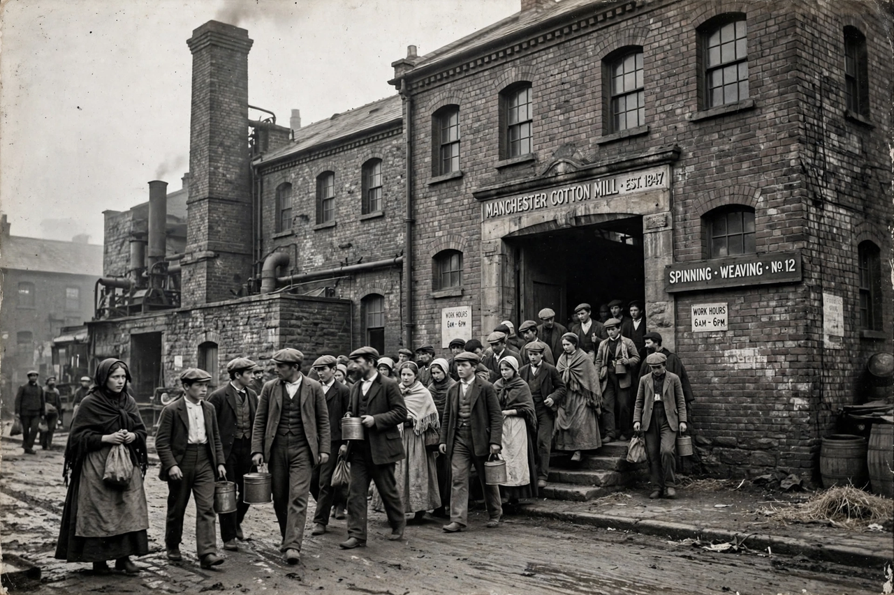

Proletariat
From Wikipedia, the free encyclopedia

The proletariat is the class of wage-earners who, owning no Means of production, must sell their labour power to live. The term derives from the Roman proletarii, the lowest census class, whose contribution to the state was their offspring (proles). In Marxism, the proletariat is the revolutionary class whose emancipation through the overthrow of the Bourgeoisie would end class society itself.
Marxist theory
Marx and Engels argued that industrial capitalism polarises society into bourgeoisie and proletariat, progressively immiserating workers while organising them collectively in factories — creating both the motive and the means for revolution. The Communist Manifesto (1848) ends with the call 'Workers of the world, unite!'; later Marxist theory debated the Dictatorship of the proletariat, the transitional state between capitalism and Communism.
History
The industrial proletariat grew with factory production in Britain from the late eighteenth century, generating the trade union movement, Chartism, socialist and labour parties, and eventually the Russian Revolution of 1917 carried out in its name. In the later twentieth century, deindustrialisation in the West, the growth of service employment and the collapse of the Soviet Union in 1991 weakened the classical category.
Contemporary usage
Sociologists debate whether precarious, gig-economy and informal workers form a new 'precariat' (Guy Standing), and whether white-collar employees belong to the proletariat or a new middle class. Roughly two billion people worldwide work informally, complicating the industrial model the term assumed.